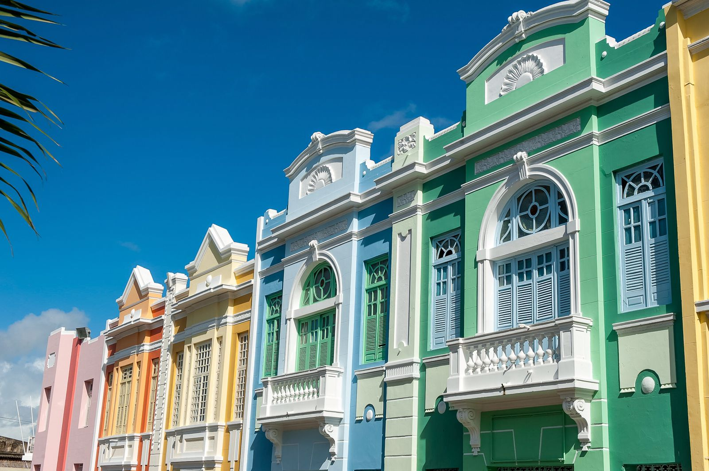
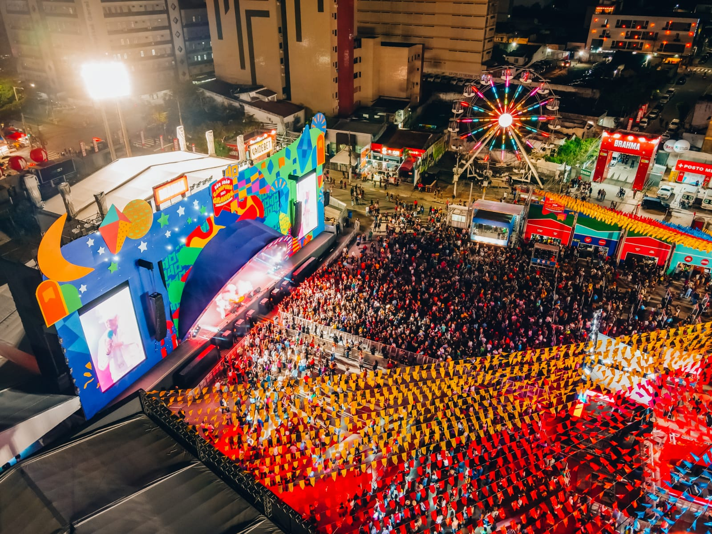

Paraíba
Venha visitar
Explorando a Riqueza Cultural, Turística e Gastronômica da Paraíba
Cultura
A Paraíba, localizada na região nordeste do Brasil, é um estado vibrante e rico em cultura. Com uma herança cultural diversificada, influenciada por indígenas, africanos e europeus, a Paraíba é um verdadeiro tesouro de tradições, festivais e artesanato. A cultura popular é intensamente celebrada através de festas religiosas, como o São João, e manifestações culturais como o bumba meu boi, o coco de roda e o maracatu. A música desempenha um papel fundamental na identidade paraibana, com gêneros como o forró e o frevo enriquecendo a cena musical do estado. Artistas locais, como Jackson do Pandeiro e Elba Ramalho, ajudaram a levar a cultura paraibana para o mundo, tornando-a reconhecida internacionalmente.
Turismo
O turismo na Paraíba é uma experiência única, que combina belas praias, rica história e paisagens deslumbrantes. A capital, João Pessoa, é uma das cidades mais antigas do Brasil, oferecendo aos visitantes uma viagem no tempo através de seu centro histórico bem preservado, com destaque para o Centro Cultural São Francisco, uma obra-prima da arquitetura barroca.
Além disso, o litoral paraibano é pontilhado por praias paradisíacas, como Tambaba, conhecida por ser uma das poucas praias de naturismo do país, e a Praia do Jacaré, famosa pelo pôr do sol ao som do Bolero de Ravel. Para os amantes da natureza, o interior do estado oferece paisagens exuberantes, como o Parque Estadual da Pedra da Boca, em Araruna, e o Vale dos Dinossauros, em Sousa, que abriga importantes sítios arqueológicos.
Culinária
A culinária paraibana é uma festa de sabores, que reflete a diversidade cultural do estado. Com ingredientes frescos e temperos únicos, a gastronomia local é uma verdadeira celebração da riqueza natural da região. Frutos do mar desempenham um papel central na culinária paraibana, com pratos como a moqueca de peixe e o camarão na moranga sendo verdadeiras iguarias. Outros pratos tradicionais incluem a carne de sol, o macaxeira com carne de sol, o bolo de rolo e a cartola, uma sobremesa feita com banana frita, queijo coalho e açúcar. Para acompanhar, não há nada melhor do que uma boa cachaça paraibana, produzida artesanalmente em diversas regiões do estado.
Pontos turísticos
Conheça alguns dos pontos mais atrativos da Paraíba para você visitar:
- Centro Cultural São Francisco – João Pessoa
- Caribessa – João Pessoa
- Estação Cabo Branco - Ciência, Cultura e Artes - João Pessoa
- Museu do Brejo Paraibano – Areia
- Parque do povo - Campina Grande
- Parque Estadual da Pedra da Boca - Araruna
- Por Do Sol Do Jacaré - Cabedelo
- Praia de Coqueirinho – Conde
- Praia de Tambaba - Conde
- Praia de Tambaú – João Pessoa
- Roliúde Nordestina - Cabaceiras
- Vale dos Dinossauros - Sousa
Galeria de fotos
Confira algumas belíssimas imagens do estado na galeria abaixo: